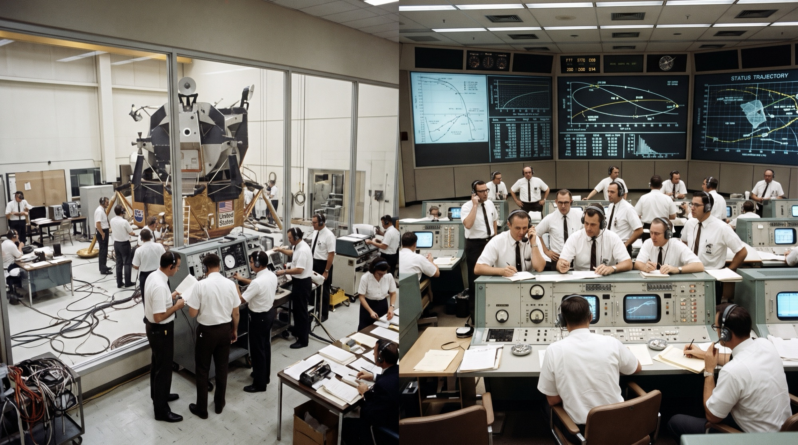
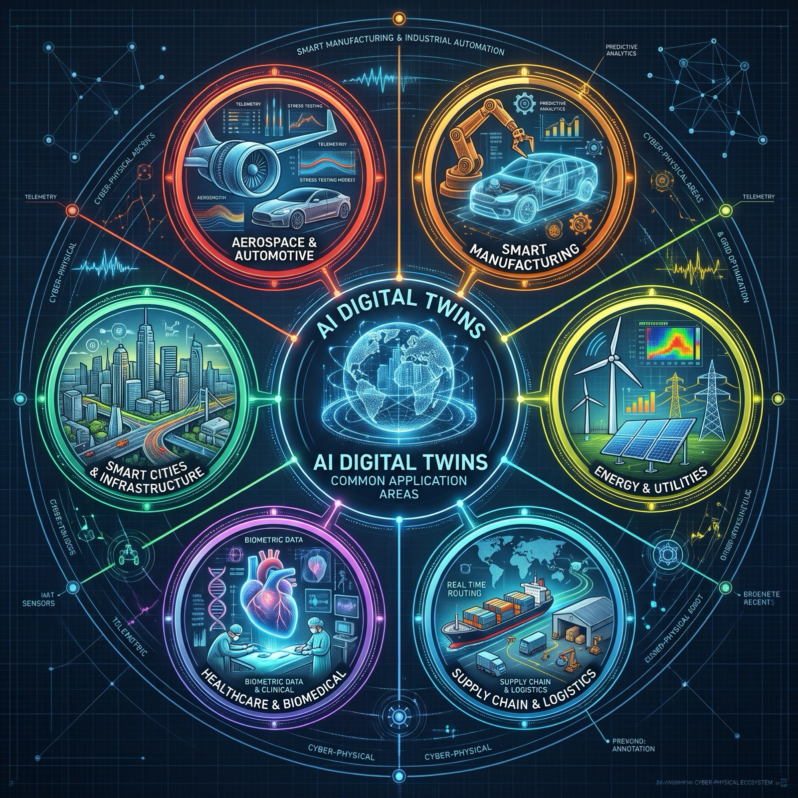
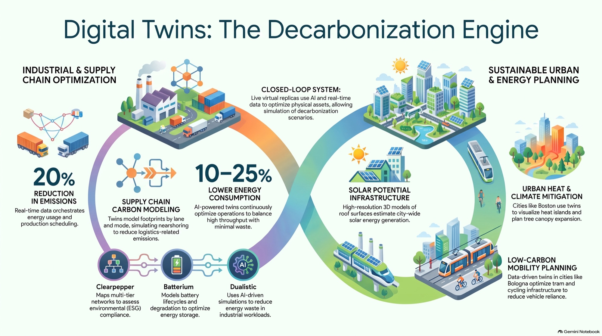
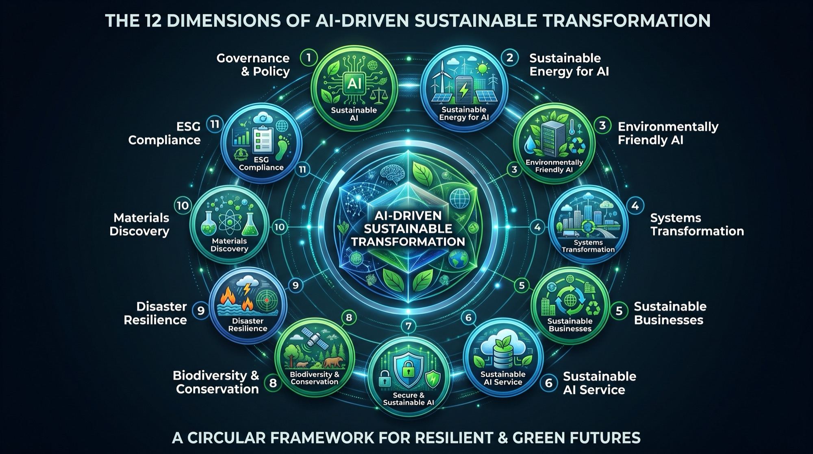
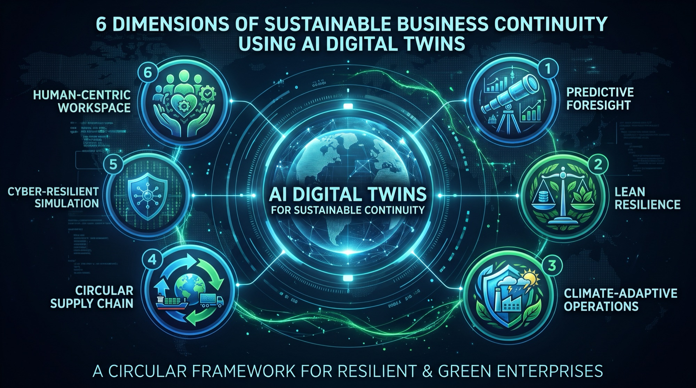

From NASA's Apollo 13 ground simulators to autonomous, carbon-aware twins that observe, orient, decide and act — how AI Digital Twins are becoming the operating system for resilient, green enterprises and cities.
agent://twin-orchestrator — ooda.log
Unplanned downtime
−20–50%
Manufacturing twins with anomaly detection & RL
Energy consumption
−10–25%
AI-optimized operations, minimal waste
Corridor congestion
~−30%
Chattanooga signals re-optimized every 4 min
HVAC energy
−15–30%
Smart-city building energy management
Agenda
Module 01 · Origins
The Origins of Digital Twins
The foundational concept of a “twin” began with NASA during the Apollo program in the late 1960s and 1970, while the modern, fully software-based “Digital Twin” emerged in the early 2000s. The evolution occurred across three major milestones.

Apollo 13 · ground replicas & Mission Control (1970)
1
1970 · THE PRECURSOR
NASA's Apollo 13 Mission
Used for
Troubleshooting life-or-death spacecraft failures in deep space from Earth.
How
Exact ground-based replicas and analog/digital simulators of the flight hardware at Mission Control. After the oxygen tank exploded in April 1970, telemetry from the damaged craft was fed into the simulators to test engine burns, conserve battery power and calculate trajectory adjustments before sending procedures up to the crew.
2
2002 · THE FORMAL ARCHITECTURE
Product Lifecycle Management
Used for
Managing manufactured products through their complete lifecycle — from CAD design to assembly, operation and disposal.
How
Dr. Michael Grieves presented the foundation at a 2002 Society of Manufacturing Engineers conference (University of Michigan) — first the Mirrored Spaces Model, later the Information Mirroring Model — establishing the three components used today:
Physical entity in real space
Virtual entity in digital space
Two-way data loops connecting them
3
2010 · COINING THE NAME
NASA Spacecraft Life-Prediction
Used for
Structural health monitoring, stress prediction and continuous fleet maintenance for next-generation aerospace vehicles.
How
NASA's John Vickers coined “Digital Twin” in the 2010 Technology Roadmap. Instead of fleet-average maintenance cycles, ultra-realistic physics-based models were paired to individual vehicles using onboard telemetry to forecast fatigue, damage accumulation and remaining lifespan.
Module 02 · Application Areas
The Most Common Application Areas for AI Digital Twins
AI Digital Twins combine physics-based simulation with machine learning, real-time IoT telemetry and generative reasoning — shifting twins from passive 3D dashboards into predictive, self-optimizing systems across six major domains.

Hover a badge to light it up · click to pin
AI
Six major domains
Each badge on the wheel is a domain where AI twins have moved from visualization to prediction and closed-loop control. Hover or tap a badge — or pick one above — to inspect it.
Manufacturing is the largest and most mature deployment ground.
Energy twins manage volatility from decentralized renewables.
Aerospace & automotive are the direct descendants of NASA's Apollo models.
1
Smart Manufacturing & Industrial Automation
The largest and most mature deployment ground for AI digital twins.
Predictive & prescriptive maintenance: vibration, acoustic and thermal telemetry from CNC machines, robotic arms and presses forecast bearing wear or motor degradation before failure.
Virtual commissioning & layout optimization: test PLC code and robotic kinematics in a physics-accurate sandbox before deploying physical lines.
Real-time closed-loop tuning: reinforcement learning tweaks feed rates, temperature and pressure to maximize OEE while minimizing scrap.
2
Energy, Utilities & Grid Optimization
Modern power systems rely on twins to manage volatility caused by decentralized renewables.
Turbine & plant health: optimize blade pitch, predict thermal stress and cut fuel emissions on wind and gas units.
Dynamic grid balancing: simulate demand and intermittent solar/wind feed-in, rerouting load and storage in real time.
Asset integrity in oil & gas: model corrosion, pressure transients and subsea pipelines to prevent leaks.
3
Supply Chain, Logistics & Warehousing
Twins map global networks from individual fulfillment centers to multimodal transport lanes.
Warehouse & fleet orchestration: model AGVs, conveyors and pickers to eliminate bottlenecks and optimize slotting.
Resilience & “what-if” stress testing: simulate geopolitical disruptions, port strikes or supplier outages before shortages hit.
End-to-end traceability & ESG: track carbon intensity and Scope 3 footprints per shipment.
4
Healthcare & Life Sciences
Operating at two scales: facility operations and personalized biology.
Patient-specific organ twins: heart or brain models from MRI, CT and hemodynamic data to simulate surgery or drug response.
Drug discovery & formulation: simulate molecular interactions and dissolution to replace costly wet-lab trials.
Hospital flow & bed capacity: replicate admissions, triage and OR scheduling to allocate staff during surges.
5
Smart Cities, Infrastructure & Real Estate
Thousands of disconnected data streams unified into operational twins.
Traffic flow & autonomous mobility: live camera vision models retime signals and clear emergency corridors.
Building energy management (BEMS): HVAC, occupancy and weather data pre-cool or cut load in peak tariff windows.
Disaster response simulation: flood surges, evacuation paths and structural loads on bridges and tunnels.
6
Aerospace & Automotive Engineering
The direct descendants of NASA's original Apollo models.
Fleet airframe & engine monitoring: gigabytes of flight data per leg compute remaining useful life (RUL) and tailor maintenance to real conditions.
Software-defined vehicle validation: billions of simulated corner-case miles train ADAS and autonomous navigation without physical crashes.
Reduced transit congestion, 15–30% HVAC energy savings
Module 03 · Smart Cities
Digital Twins for Smart Cities
An Urban Digital Twin (UDT) aggregates GIS terrain, 3D BIM, municipal IoT sensors and public service databases into a single living computational model. Combined with AI, it shifts from a static 3D visualization into a continuous, predictive OODA engine for city operations.

Digital Twins: the decarbonization engine
High-impact real-world deployments
live twins
Virtual Singapore
island-wide
Collaborative dynamic 3D platform with real-time sensor streams. Runs urban wind-flow models for natural ventilation, predicts telecom coverage impact of new developments, and simulates crowd evacuation for civic events.
Chattanooga, Tennessee
~30%
With Oak Ridge National Laboratory: an operational twin consuming 500+ sources. AI re-optimizes signal patterns every four minutes, cutting downtown corridor congestion by ~30%.
Helsinki 3D+
carbon neutral
Tracks the path to carbon neutrality — historical building energy use plus real-time solar irradiation models to prioritize retrofits block by block.
1 · Primary AI application areas
urban OODA functions
Observe & Act
Dynamic Traffic & Multimodal Transit
Edge computer vision counts vehicles, pedestrians and cyclists; agents retime signals in 3–5 min loops, create emergency green corridors and dispatch shuttles.
Energy · PEDs
Energy Management & Positive Energy Districts
CityGML geometry + microclimate + smart meters: ML predicts peak demand hours ahead, triggers demand response, thermal storage and solar feed-in.
Resilience
Hydrology & Disaster Resilience
Radar, soil moisture and drainage telemetry coupled with hydrodynamic engines predict street-level flash floods, trigger storm gates and reroute evacuations.
ESG
Urban Microclimate & Carbon Tracking
Wind-tunnel and heat-island simulation; genetic algorithms optimize tree canopy, reflective coatings and building orientation to cut cooling loads.
What-if
Virtual Planning & Permitting
Drop BIM models into the city twin before zoning approval to test shadows, line of sight, cellular dead zones and traffic disruption.
Bridging utility SCADA, private transit feeds and land registries into a standard geospatial semantic model (OGC CityGML, Energy ADE).
Citizen privacy & surveillance
Balancing real-time computer-vision monitoring with anonymization — edge redaction and differential privacy.
Model drift & calibration
Keeping the twin synchronized with physical change: unmapped construction, sensor battery degradation, tree growth altering wind dynamics.
Module 04 · OODA Loop
The OODA Loop and Digital Twins
Developed by military strategist John Boyd, the OODA Loop is an information-processing feedback engine: success depends on cycling through Observe, Orient, Decide and Act faster and more accurately than your environment or competitors can introduce chaos.
In personal life, friction rarely comes from lack of effort; it comes from getting stuck in Orient (paralysis by analysis) or Decide (indecision).
Phase
Daily life mechanism
Practical example (personal energy & health)
Observe
Raw sensory and contextual intake without immediate judgment.
Filtering observations through mental models, habits, stress levels and assumptions.
Recognizing late caffeine plus poor hydration during deep work is depleting cognitive stamina.
Decide
Selecting a single hypothesis-driven intervention rather than waiting for certainty.
A concrete rule: no caffeine after 1 PM, 1 liter of water before noon.
Act
Executing immediately to generate fresh observational feedback.
Pre-filling the carafe, swapping espresso for herbal tea, noting next-day focus.
Core dynamic: fast personal loops prevent small routine misalignments from compounding into systemic burnout.
Technological waves — from client-server architectures to modern agentic systems — follow Boyd's cycle to obsolete legacy incumbents.
Observe
Market signals & edge anomalies
Engineers and startups monitor emerging constraints — compute bottlenecks, latency limits, monolithic ERPs giving way to modular APIs.
Orient
Synthesis & paradigm shifts
The crucial step — incumbents fail here. Builders re-orient around first principles, e.g. LLMs as reasoning engines orchestrating enterprise data flows.
Decide
Resource allocation
Committing capital, compute and talent to a specific protocol, tooling standard or micro-architecture.
Act
Deployment & feedback
Shipping MVPs, open-sourcing libraries, stress-testing under live load — adoption feeds the next iteration.
Core dynamic: modular, loosely coupled organizations orient and act in days; rigid legacy hierarchies spend months debating the observation.
A Digital Twin is the literal, silicon-and-sensor embodiment of an automated OODA loop — replacing human latency with continuous bidirectional telemetry and computational modeling.
IoT sensors, vibration meters and runtime telemetry stream real-time operational data from the physical system — a turbine, a factory floor or an enterprise data pipeline — into the digital model.
O
Orient · State Estimation & Physics
Raw signals are contextualized against historical baselines, structural physics and anomaly detection — determining not just what changed but what it means within tolerances (e.g. normal thermal expansion vs. bearing friction).
D
Decide · Simulation & Optimization
Instead of guessing, the twin runs synthetic “what-if” simulations in parallel sandboxes, evaluating mitigation paths to find the optimal action — e.g. reduced throughput vs. an unscheduled outage.
A
Act · Automated Dispatch / Control
The twin triggers an actuator, modulates a parameter directly, or issues a prescriptive alert to operators. The asset responds, creating new telemetry and restarting the loop.
// physical asset ⇄ twin engine: telemetry up, control commands down
Heavy Asset Intelligence · 6-layer stack + closed loop
See ≈ Observe
Continuous streaming of vibration, temperature and torque telemetry into the virtual model.
Think ≈ Orient + Decide
AI detects subtle anomalies weeks in advance — 20–50% lower unplanned downtime.
Do ≈ Act
Closed-loop control balances peak output with energy conservation — ~20% lower emissions, 10–25% less energy.
Module 05 · Sustainable AI
The 12 Dimensions of AI-Driven Sustainable Transformation
Understanding AI's role in sustainable transformation means looking at both sides of the coin: greening of AI (mitigating the environmental footprint of computation) and AI for greening (transforming industries, energy grids and ecological preservation). Seven initial dimensions are extended by five new ones.

Hover a badge to light it up · click to pin
1
Sustainable AI
core · ethics & longevity
The ethical, societal and systemic longevity of AI across its lifecycle: algorithmic efficiency, social equity, fair labor across data-labeling supply chains, and preventing computational monopolies — fostering well-being and equitable development without depleting resources or deepening inequality.
2
Sustainable Energy for AI
greening of AI
How data centers procure and consume power: shifting hyperscale facilities to 24/7 carbon-free energy (nuclear, geothermal, wind, solar), co-locating near renewable generation, and using AI to align workloads with renewable availability.
3
Environmentally Friendly AI (Green AI)
greening of AI
Engineering models and hardware to minimize direct damage: quantization, distillation, parameter-efficient fine-tuning (PEFT), neuromorphic computing, closed-loop liquid cooling and responsible e-waste recycling to cut water use and carbon.
4
AI's Impact on Transforming Systems
AI for greening
Macro-level systems engineering with AI as orchestrator of structural decarbonization: autonomous smart-grid balancing, multimodal traffic optimization and real-time city management where heating, cooling and resource flows self-regulate.
5
AI for Sustainable Businesses
AI for greening
An enterprise intelligence engine moving operating models from linear consumption to long-term ESG viability: reverse logistics, less raw-material scrap, lifecycle forecasting and circular supply chains that reduce Scope 1, 2 and 3 emissions.
6
Sustainable AI Service for Businesses
service model
SaaS, API and cloud services architected for measurable utility without runaway cost: transparent compute accounting, multi-tenant optimization, carbon-aware routing and SLAs built on right-sizing (simple queries → small language models).
7
Secure & Sustainable AI
resilience
Long-term resilience collapses if models can be compromised. Safeguards against data poisoning, prompt injection, model inversion and insider threats — protecting critical sustainable infrastructure like power grids and water systems.
8
Biodiversity, Conservation & Climate Monitoring
new dimension
Computer vision and satellite sensor fusion monitor deforestation, map canopy shifts, track endangered wildlife and spot illegal fishing or poaching in real time — an automated guardian for ecosystems.
9
Climate Adaptation & Disaster Resilience
new dimension
Hyper-local predictive climate modeling and early warnings for flash floods, hurricanes and wildfires — giving cities, operators and vulnerable communities lead time to evacuate and reinforce defenses.
10
Materials Discovery & Green Chemistry
new dimension
Graph neural networks simulate atomic configurations in days rather than decades, accelerating non-toxic batteries, room-temperature superconductors, carbon-capture membranes and biodegradable plastics.
11
Automated ESG Compliance & Carbon Accounting
new dimension
Ingesting and auditing unstructured data — utility bills, manifests, supplier invoices — to automate carbon accounting under CSRD and ISSB, eliminating greenwashing through verifiable metrics.
12
Sociotechnical Governance & Policy
new dimension · framework core
Institutional guardrails against lock-in, resource hoarding and displacement: mandatory compute-footprint disclosure, copyright protection, workforce reskilling and algorithmic accountability — steering AI toward public interest and shared ecological stewardship.
// ✦ = new dimension · governance (12) steers the whole framework at its core
Greening of AI
dimensions 1–3 · 6–7
Reduce the footprint of computation itself — carbon-free power for data centers, efficient models and hardware, right-sized services and secure, resilient infrastructure.
AI for Greening
dimensions 4–5 · 8–12
Apply AI to transform systems — grids, cities, businesses, ecosystems, climate adaptation, materials science, ESG reporting and policy.
Module 06 · Sustainable Continuity
Sustainable Business Continuity using AI Digital Twins
Instead of static continuity playbooks and post-crisis recovery, an AI Digital Twin creates a dynamic, high-fidelity virtual mirror of an enterprise's assets, IT, workflows and supply networks — anticipating disruption and staying resilient without compromising ecological or economic sustainability.

Hover a badge to light it up · click to pin
◎
AI Digital Twins for Sustainable Continuity
A circular framework for resilient & green enterprises: six dimensions that move business continuity from reactive recovery to predictive, carbon-aware prevention. Hover or tap a badge to explore each.
1
From Reactive Recovery to Predictive Foresight
Traditional BCM triggers failovers only after an outage, cyberattack or catastrophe. Twins ingest IoT telemetry, geopolitical risk feeds, grid data and weather to model stress before it manifests — simulating failure cascades (e.g. a regional power failure hitting server racks or raw-material nodes) and pre-rerouting loads before downtime happens.
Continuity used to mean idle duplicate “hot site” data centers and massive buffer inventories. Twins enable algorithmic resilience: dynamic stress-testing across multi-tier networks optimizes existing multi-cloud footprints and lean buffers — cutting idle Scope 2 emissions and material waste while keeping zero-interruption service.
Twins simulate real-time climate risk against real estate, plants and logistics corridors — flood risk, local water stress, heatwave blackouts — throttling energy use, shifting loads to on-site microgrids, or moving production to unaffected sister sites with minimal carbon spikes.
4
Supply Chain Circularity & Disruption Rerouting
Disruptions often force high-emission responses like expedited air freight. End-to-end supply chain twins simulate supplier bottlenecks, port strikes and embargoes in advance, find low-carbon alternatives (maritime or rail instead of air) and orchestrate circular reverse logistics.
5
Cyber-Resilient Infrastructure Simulation
An isolated virtual sandbox mirroring production lets security architects run “what-if” ransomware simulations, test autonomous recovery protocols and isolate compromised sub-networks — validating recovery paths without risking live operations or customer data.
6
Human-Centric Workspace Resilience
Human health, safety and adaptability at the center: twins simulate heat, air quality and hazards, orchestrate safe evacuation routes and optimize shifts to prevent burnout — and enable remote, asynchronous operations through immersive collaboration during systemic disruption.
// a circular framework for resilient & green enterprises
Core value matrix · Traditional BCM vs. AI Digital Twin continuity